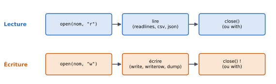
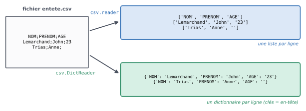

9. Lire et écrire des fichiers#
Objectifs du chapitre
À la fin de ce chapitre, vous saurez :
lister les fichiers d’un dossier et construire leurs chemins avec le module
os;comprendre ce qu’est un fichier texte et la notion d’encodage ;
lire un fichier texte ligne par ligne ;
lire et écrire des fichiers CSV (module
csv) et JSON (modulejson) ;utiliser
withpour ne pas oublier de fermer un fichier.
Prérequis : chapitres 1 à 8. Durée indicative : 2h.
Avant de commencer
Ce chapitre nécessite de travailler sur votre ordinateur (avec Thonny, par exemple) : les fenêtres de code intégrées à la version web n’ont pas accès à vos fichiers.
Pour reproduire les exemples, créez un dossier de travail contenant votre script Python et les fichiers de données utilisés dans ce chapitre (simple.csv, entete.csv, simple.json et le sous-dossier donnees contenant fable.txt et notes.csv), dont le contenu est donné au fil du texte.
Les chemins de fichiers relatifs (comme "donnees/fable.txt") sont interprétés à partir du dossier dans lequel le programme est exécuté : si Python ne trouve pas vos fichiers (FileNotFoundError), c’est en général que le script n’est pas lancé depuis le bon dossier.
Un fichier est un ensemble d’informations stocké sur une mémoire (un disque dur, une clé USB…). En lisant des fichiers depuis un programme Python, on va pouvoir traiter des données qui ne sont pas écrites « en dur » dans le programme : un tableau de notes, un texte, des relevés météo… Et en écrivant des fichiers, on pourra conserver les résultats de nos programmes.
9.1. Lister les fichiers d’un dossier avec le module os#
Il est fréquent de vouloir répéter la même opération sur plusieurs fichiers, par exemple sur tous les fichiers d’extension .txt d’un dossier.
Le module os propose pour cela des fonctions standard de manipulation de fichiers, notamment la fonction listdir, qui liste les fichiers et sous-dossiers contenus dans un dossier donné :
import os
for nom_fichier in os.listdir("donnees"):
print(nom_fichier)
machin.csv
titanic.csv
penguins.csv
flights.csv
notes.csv
fable.txt
truc.txt
La fonction listdir accepte un chemin absolu (comme "C:/Users/aude/Documents" ou "/home/aude/documents") ou relatif (ici, "donnees" désigne le sous-dossier donnees du dossier de travail courant).
Le nom stocké dans nom_fichier ne contient pas le chemin vers le fichier.
Or, pour ouvrir ensuite ce fichier, il faudra bien spécifier ce chemin.
On utilise pour cela la fonction os.path.join :
import os
repertoire = "donnees"
for nom_fichier in os.listdir(repertoire):
nom_complet_fichier = os.path.join(repertoire, nom_fichier)
print(nom_fichier, "->", nom_complet_fichier)
machin.csv -> donnees/machin.csv
titanic.csv -> donnees/titanic.csv
penguins.csv -> donnees/penguins.csv
flights.csv -> donnees/flights.csv
notes.csv -> donnees/notes.csv
fable.txt -> donnees/fable.txt
truc.txt -> donnees/truc.txt
Il est préférable d’utiliser os.path.join plutôt que de concaténer les chaînes de caractères vous-même, car la forme des chemins dépend du système d’exploitation (\ sous Windows, / sous Linux et macOS), ce que os.path.join gère pour vous.
9.2. Fichiers textuels et encodage#
9.2.1. Qu’est-ce qu’un fichier textuel ?#
Dans ce chapitre, nous ne traitons que de fichiers textuels, c’est-à-dire de fichiers dont le contenu est lisible en clair lorsqu’on les ouvre avec un éditeur de texte brut (comme le Bloc-notes sous Windows, TextEdit sous macOS, gedit sous Linux… ou Thonny).
C’est le cas des fichiers .txt, .csv, .json, et même des fichiers .py !
Sous Linux et macOS, la commande head affiche le début d’un fichier ; on obtient ici un contenu parfaitement lisible :
!head entete.csv
NOM;PRENOM;AGE
Lemarchand;John;23
Trias;Anne;
À l’inverse, un fichier non textuel (une image, un document Word, un fichier Excel…) n’est pas lisible ainsi : ce chapitre ne traite que des fichiers textuels.
9.2.2. L’encodage#
Un ordinateur ne stocke que des nombres : pour stocker du texte, il faut donc associer un code à chaque caractère. Il existe plusieurs façons de faire, appelées encodages. Nous nous focaliserons ici sur les deux encodages que vous êtes les plus susceptibles de rencontrer :
l’encodage UTF-8, dont le nom en Python est
"utf-8": c’est aujourd’hui l’encodage le plus répandu ;l’encodage Latin-1 (ISO-8859-1), dont le nom en Python est
"iso-8859-1", que l’on rencontre dans d’anciens fichiers (et dans certains exports de logiciels sous Windows).
La principale différence entre ces deux encodages concerne les caractères accentués.
Si vous lisez un fichier avec le mauvais encodage, les accents apparaissent sous une forme étrange (par exemple é au lieu de é), ou vous obtenez une erreur UnicodeDecodeError.
À retenir
Précisez toujours l’encodage lorsque vous ouvrez un fichier texte.
En l’absence de contrainte extérieure, utilisez l’encodage UTF-8.
Si les accents d’un fichier lu s’affichent mal, essayez l’autre encodage ("iso-8859-1").
9.3. Lire des fichiers textuels#


Fig. 9.1 Les étapes de la lecture et de l’écriture d’un fichier.#
La lecture d’un fichier se déroule en deux étapes :
ouvrir le fichier en lecture ;
parcourir son contenu.
En supposant que le nom du fichier à ouvrir soit stocké dans la variable nom_fichier, le code suivant ouvre un fichier en lecture avec l’encodage UTF-8 :
fp = open(nom_fichier, "r", encoding="utf-8")
Le second argument ("r", pour read) indique que le fichier doit être ouvert en lecture.
La variable fp (pour file pointer) représente le fichier ouvert : elle garde en mémoire l’endroit où nous en sommes dans la lecture du fichier (pour l’instant, le début).
9.3.1. Fichiers textuels génériques#
Nous appelons « fichier textuel générique » un fichier dont le contenu n’a pas de structure particulière, comme un texte libre. Une fois ouvert, on peut le lire ligne par ligne :
fp = open("donnees/fable.txt", "r", encoding="utf-8")
for ligne in fp.readlines():
print(ligne)
fp.close()
La Cigale, ayant chanté
Tout l'été,
Se trouva fort dépourvue
Quand la bise fut venue :
Pas un seul petit morceau
De mouche ou de vermisseau.
Elle alla crier famine
Chez la Fourmi sa voisine,
La priant de lui prêter
Quelque grain pour subsister
Jusqu'à la saison nouvelle.
« Je vous paierai, lui dit-elle,
Avant l'Oût, foi d'animal,
Intérêt et principal. »
La Fourmi n'est pas prêteuse :
C'est là son moindre défaut.
Que faisiez-vous au temps chaud ?
Dit-elle à cette emprunteuse.
— Nuit et jour à tout venant
Je chantais, ne vous déplaise.
— Vous chantiez ? j'en suis fort aise.
Eh bien ! dansez maintenant.
La variable ligne, de type chaîne de caractères, contient successivement le texte de chacune des lignes du fichier.
Vous remarquez sans doute que des lignes vides sont affichées entre les lignes du texte.
En effet, chaque ligne lue se termine par un caractère de retour à la ligne (noté "\n"), et print ajoute son propre retour à la ligne.
On utilise souvent la méthode strip pour retirer ce caractère :
fp = open("donnees/fable.txt", "r", encoding="utf-8")
for ligne in fp.readlines():
ligne = ligne.strip()
print(ligne)
fp.close()
La Cigale, ayant chanté
Tout l'été,
Se trouva fort dépourvue
Quand la bise fut venue :
Pas un seul petit morceau
De mouche ou de vermisseau.
Elle alla crier famine
Chez la Fourmi sa voisine,
La priant de lui prêter
Quelque grain pour subsister
Jusqu'à la saison nouvelle.
« Je vous paierai, lui dit-elle,
Avant l'Oût, foi d'animal,
Intérêt et principal. »
La Fourmi n'est pas prêteuse :
C'est là son moindre défaut.
Que faisiez-vous au temps chaud ?
Dit-elle à cette emprunteuse.
— Nuit et jour à tout venant
Je chantais, ne vous déplaise.
— Vous chantiez ? j'en suis fort aise.
Eh bien ! dansez maintenant.
On peut aussi lire tout le contenu d’un fichier d’un coup, dans une unique chaîne de caractères, avec la méthode read :
fp = open("donnees/fable.txt", "r", encoding="utf-8")
contenu = fp.read()
fp.close()
print(len(contenu), "caractères")
print(len(contenu.split()), "mots")
608 caractères
108 mots
Une fois la lecture terminée, on ferme le fichier avec la méthode close.
9.3.2. Mieux : la directive with#
Il est facile d’oublier de fermer un fichier.
Python propose une syntaxe qui s’en charge pour nous, avec le mot-clé with :
with open("donnees/fable.txt", "r", encoding="utf-8") as fp:
for ligne in fp.readlines():
print(ligne.strip())
print("Ici, le fichier est fermé")
La Cigale, ayant chanté
Tout l'été,
Se trouva fort dépourvue
Quand la bise fut venue :
Pas un seul petit morceau
De mouche ou de vermisseau.
Elle alla crier famine
Chez la Fourmi sa voisine,
La priant de lui prêter
Quelque grain pour subsister
Jusqu'à la saison nouvelle.
« Je vous paierai, lui dit-elle,
Avant l'Oût, foi d'animal,
Intérêt et principal. »
La Fourmi n'est pas prêteuse :
C'est là son moindre défaut.
Que faisiez-vous au temps chaud ?
Dit-elle à cette emprunteuse.
— Nuit et jour à tout venant
Je chantais, ne vous déplaise.
— Vous chantiez ? j'en suis fort aise.
Eh bien ! dansez maintenant.
Ici, le fichier est fermé
Le fichier est ouvert et stocké dans la variable fp au début du bloc with, et il est automatiquement fermé dès que l’on sort du bloc (même en cas d’erreur).
C’est la façon recommandée d’ouvrir des fichiers en Python.
Testez-vous
Le fichier donnees/fable.txt contient 22 lignes. Qu’affiche le programme suivant ?
n = 0
with open("donnees/fable.txt", "r", encoding="utf-8") as fp:
for ligne in fp.readlines():
if "Fourmi" in ligne:
n += 1
print(n)
Réponse
Il compte les lignes contenant le mot « Fourmi » (avec une majuscule) et affiche 2 : « Chez la Fourmi sa voisine, » et « La Fourmi n’est pas prêteuse : ».
9.3.3. Fichiers CSV#
Les fichiers CSV (Comma-Separated Values) permettent de stocker des données organisées sous la forme de tableaux dans des fichiers textuels. Chaque ligne du fichier correspond à une ligne du tableau, et au sein de chaque ligne, les cellules (les colonnes) sont séparées par un délimiteur. À l’origine, ce délimiteur était la virgule (d’où le nom de ce format), mais on rencontre très souvent le point-virgule, notamment dans les fichiers produits par les tableurs en français. Vous pouvez d’ailleurs ouvrir un fichier CSV avec un tableur (LibreOffice Calc, Excel…).
Pour manipuler ces fichiers, Python dispose d’un module dédié, appelé csv.
Ce module contient notamment une fonction reader qui simplifie la lecture des fichiers CSV (remarquez l’argument delimiter, qui précise le délimiteur utilisé) :
import csv
# Contenu du fichier simple.csv :
# 1;2;3;4;5
# a;b;c;d;e
# xx;xx;xx;xx;xx
# 0.4;0.5;0.7;0.8;0.9
with open("simple.csv", "r", encoding="utf-8") as fp:
for ligne in csv.reader(fp, delimiter=";"):
print(ligne)
['1', '2', '3', '4', '5']
['a', 'b', 'c', 'd', 'e']
['xx', 'xx', 'xx', 'xx', 'xx']
['0.4', '0.5', '0.7', '0.8', '0.9']
Contrairement au cas des fichiers textuels génériques, la variable de boucle ligne n’est plus une chaîne de caractères mais une liste de chaînes de caractères : les cellules de la ligne courante du tableau.
Erreur fréquente
Toutes les valeurs lues dans un fichier CSV sont des chaînes de caractères, même celles qui ressemblent à des nombres.
Pour faire des calculs, il faut les convertir avec int ou float : float(ligne[3]).
9.3.3.1. Cas des fichiers à en-tête#
Souvent, la première ligne d’un fichier CSV contient les noms des colonnes (on parle d’en-tête), comme dans le fichier entete.csv suivant :
NOM;PRENOM;AGE
Lemarchand;John;23
Trias;Anne;
Dans ce cas, il est pratique que chaque ligne lue soit représentée par un dictionnaire dont les clés sont les noms des colonnes : c’est ce que permet csv.DictReader (à utiliser à la place de csv.reader) :


Fig. 9.2 csv.reader produit une liste par ligne ; csv.DictReader produit un dictionnaire par ligne, dont les clés sont lues dans l’en-tête.#
import csv
with open("entete.csv", "r", encoding="utf-8") as fp:
for ligne in csv.DictReader(fp, delimiter=";"):
print(ligne["PRENOM"], ligne["NOM"], "a pour âge :", ligne["AGE"])
John Lemarchand a pour âge : 23
Anne Trias a pour âge :
Le code est ainsi bien plus lisible : ligne["AGE"] est plus parlant que ligne[2].
9.3.3.2. Exemple guidé : la moyenne d’une colonne#
Le fichier donnees/notes.csv contient les notes de 8 étudiants dans trois matières :
nom;prenom;maths;info;anglais
Martin;Aude;14;17;12
Benali;Yanis;9;12;15
...
Calculons la moyenne de la classe en informatique. Il s’agit d’un accumulateur (une somme et un compteur), en n’oubliant pas de convertir les notes en nombres :
import csv
somme = 0
nb_etudiants = 0
with open("donnees/notes.csv", "r", encoding="utf-8") as fp:
for ligne in csv.DictReader(fp, delimiter=";"):
somme += float(ligne["info"])
nb_etudiants += 1
print(f"Moyenne en info : {somme / nb_etudiants:.2f}")
Moyenne en info : 13.00
9.3.4. Fichiers JSON#
Les fichiers JSON (JavaScript Object Notation) permettent de stocker des données structurées, par exemple avec une organisation hiérarchique.
Un document JSON ressemble beaucoup à un dictionnaire Python (à la nuance près que les clés d’un document JSON sont forcément des chaînes de caractères, écrites entre guillemets doubles).
Voici le contenu du fichier simple.json :
{
"num_etudiant": "21300000",
"notes": [12, 5, 14],
"date_de_naissance": {
"jour": 1,
"mois": 1,
"annee": 1995
}
}
Pour lire de tels fichiers, on dispose du module json, qui contient une fonction load :
import json
with open("simple.json", "r", encoding="utf-8") as fp:
d = json.load(fp)
print(d)
print(type(d))
print(d["notes"])
print(d["date_de_naissance"]["annee"])
{'num_etudiant': '21300000', 'notes': [12, 5, 14], 'date_de_naissance': {'jour': 1, 'mois': 1, 'annee': 1995}}
<class 'dict'>
[12, 5, 14]
1995
Contrairement aux fichiers CSV, les données sont directement converties dans le bon type : d["notes"] est une liste d’entiers, et non une chaîne de caractères.
Un fichier JSON peut également contenir une liste de dictionnaires, comme dans l’exemple suivant :
[{
"num_etudiant": "21300000",
"notes": [12, 5, 14]
},
{
"num_etudiant": "21300001",
"notes": [14]
}]
Dans ce cas, json.load retourne bien évidemment une liste de dictionnaires.
9.4. Écrire des fichiers textuels#
L’écriture d’un fichier se déroule en trois étapes :
ouvrir le fichier en écriture ;
ajouter du contenu dans le fichier ;
fermer le fichier (automatiquement si l’on utilise
with).
Pour ouvrir un fichier en écriture, on utilise le mode "w" (pour write) :
fp = open(nom_fichier, "w", encoding="utf-8", newline="\n")
L’argument newline="\n" assure que les retours à la ligne seront écrits de la même façon quel que soit le système d’exploitation.
Attention !
Si le fichier existe déjà, ouvrir un fichier en mode "w" efface son contenu : on repart d’un fichier vide.
Si l’on souhaite au contraire ajouter du texte à la fin d’un fichier existant, on utilise le mode "a" (pour append) :
fp = open(nom_fichier, "a", encoding="utf-8", newline="\n")
Si l’on n’utilise pas with, il ne faut pas oublier de fermer le fichier une fois l’écriture terminée, avec fp.close(), sans quoi une partie du contenu pourrait ne pas être écrite sur le disque.
9.4.1. Fichiers textuels génériques#
Pour ajouter du contenu à un fichier, on utilise la méthode write :
with open("ecriture.txt", "w", encoding="utf-8", newline="\n") as fp:
fp.write("La vie est belle\n")
for i in range(3):
fp.write(f"Ligne numéro {i}\n")
Contrairement à la fonction print, la méthode write n’ajoute pas de retour à la ligne après la chaîne de caractères : il faut l’inclure vous-même (avec "\n") si vous souhaitez passer à la ligne.
De plus, write n’accepte que des chaînes de caractères : pour écrire un nombre, il faut le convertir (avec str ou dans une f-string).
Vérifions le contenu du fichier en le relisant :
with open("ecriture.txt", "r", encoding="utf-8") as fp:
print(fp.read())
La vie est belle
Ligne numéro 0
Ligne numéro 1
Ligne numéro 2
9.4.2. Fichiers CSV#
Le module csv contient également une fonction writer qui simplifie l’écriture des fichiers CSV :
import csv
with open("ecriture.csv", "w", encoding="utf-8", newline="\n") as fp:
csvfp = csv.writer(fp, delimiter=";")
csvfp.writerow(["nom", "moyenne"])
csvfp.writerow(["Aude", 14.33])
csvfp.writerow(["Yanis", 12])
# Après cela, le fichier contient les lignes suivantes :
# nom;moyenne
# Aude;14.33
# Yanis;12
La méthode writerow prend une liste en argument et écrit dans le fichier les éléments de cette liste, séparés par le délimiteur choisi ; elle se charge elle-même du retour à la ligne.
9.4.3. Fichiers JSON#
Le module json contient une fonction dump qui écrit le contenu d’un dictionnaire (ou d’une liste) dans un fichier JSON :
import json
liste = [
{"a": 5},
{"b": 3, "a": 7}
]
with open("ecriture.json", "w", encoding="utf-8", newline="\n") as fp:
json.dump(liste, fp)
# Après cela, le fichier contient la ligne suivante :
# [{"a": 5}, {"b": 3, "a": 7}]
L’argument optionnel indent permet d’obtenir un fichier plus lisible, avec des retours à la ligne et une indentation : json.dump(liste, fp, indent=2).
Vous pouvez vous référer à la documentation de cette fonction pour plus de détails.
Erreurs fréquentes de ce chapitre
Message d’erreur |
Cause probable |
|---|---|
|
le nom du fichier est mal écrit, ou le programme n’est pas exécuté depuis le dossier qui contient le fichier |
|
le fichier n’est pas encodé en UTF-8 : essayer |
|
|
|
le nom de colonne ne correspond pas exactement à l’en-tête (majuscules, espaces…), ou le mauvais délimiteur est utilisé |
|
une cellule vide : il faut tester si la valeur est vide avant de la convertir |
Le fichier écrit est vide ou incomplet |
le fichier n’a pas été fermé : utiliser |
9.5. Exercices#
Rappel
Ces exercices sont à faire sur votre ordinateur, avec les fichiers de données donnés dans ce chapitre.
Exercice 9.1 : Compter les lignes des fichiers .txt ★
Écrivez une fonction qui affiche, pour chaque fichier d’extension .txt d’un répertoire passé en argument, le nom du fichier ainsi que son nombre de lignes.
Indice
Écrivez d’abord une fonction nb_lignes(nom_fichier) qui retourne le nombre de lignes d’un fichier, puis une seconde fonction qui parcourt le répertoire avec os.listdir et teste l’extension avec la méthode endswith.
Solution
import os
def nb_lignes(nom_fichier):
n = 0
with open(nom_fichier, "r", encoding="utf-8") as fp:
for ligne in fp.readlines():
n += 1
return n
def nb_lignes_repertoire(repertoire):
for nom_fichier in os.listdir(repertoire):
if nom_fichier.endswith(".txt"):
nom_complet_fichier = os.path.join(repertoire, nom_fichier)
print(nom_complet_fichier, nb_lignes(nom_complet_fichier))
nb_lignes_repertoire("donnees")
On aurait aussi pu écrire return len(fp.readlines()) dans la fonction nb_lignes.
Exercice 9.2 : Statistiques sur un texte ★★
Écrivez une fonction statistiques(nom_fichier) qui retourne, pour le fichier texte dont le nom est passé en argument, son nombre de lignes, son nombre de mots et la longueur moyenne d’une ligne (en nombre de mots).
Testez-la sur le fichier donnees/fable.txt.
Solution
def statistiques(nom_fichier):
nb_lignes = 0
nb_mots = 0
with open(nom_fichier, "r", encoding="utf-8") as fp:
for ligne in fp.readlines():
nb_lignes += 1
nb_mots += len(ligne.split())
return nb_lignes, nb_mots, nb_mots / nb_lignes
lignes, mots, moyenne = statistiques("donnees/fable.txt")
print(f"{lignes} lignes, {mots} mots, {moyenne:.1f} mots par ligne en moyenne")
Remarquez que les signes de ponctuation isolés (comme le « : » de « venue : ») sont comptés comme des mots par split. Pour un comptage plus précis, il faudrait d’abord les retirer avec replace.
Exercice 9.3 : Moyennes des étudiants ★★
En utilisant le fichier donnees/notes.csv, écrivez un programme qui affiche, pour chaque étudiant, son prénom, son nom et sa moyenne dans les trois matières (avec deux décimales), puis le nom de l’étudiant ayant la meilleure moyenne.
Indice
Utilisez csv.DictReader. Pour la meilleure moyenne, reprenez l’idée de l’exercice 7.3 (garder en mémoire la meilleure valeur rencontrée et le nom associé).
Solution
import csv
meilleure_moyenne = None
meilleur_etudiant = None
with open("donnees/notes.csv", "r", encoding="utf-8") as fp:
for ligne in csv.DictReader(fp, delimiter=";"):
moyenne = (float(ligne["maths"]) + float(ligne["info"]) + float(ligne["anglais"])) / 3
nom_complet = f"{ligne['prenom']} {ligne['nom']}"
print(f"{nom_complet:<15} : {moyenne:.2f}")
if meilleure_moyenne is None or moyenne > meilleure_moyenne:
meilleure_moyenne = moyenne
meilleur_etudiant = nom_complet
print(f"Meilleure moyenne : {meilleur_etudiant} ({meilleure_moyenne:.2f})")
Et pandas dans tout ça ?
Au chapitre 11, nous verrons que la bibliothèque pandas permet de lire un fichier CSV en une seule ligne (pd.read_csv(...)) et de faire des calculs sur ses colonnes sans écrire de boucle.
Il reste néanmoins essentiel de comprendre ce qui se passe « sous le capot » (chemins, encodage, délimiteur, conversion des types) : ce sont exactement les mêmes notions qui interviennent, et les mêmes erreurs que l’on rencontre, avec pandas.
9.6. Bilan du chapitre#
À retenir
os.listdir(dossier)liste un dossier ;os.path.join(dossier, nom)construit un chemin.Ouvrir :
with open(nom, mode, encoding="utf-8") as fp:avec le mode"r"(lecture),"w"(écriture, écrase le fichier) ou"a"(ajout à la fin).Texte :
fp.readlines()(liste des lignes, à nettoyer avecstrip),fp.read()(tout le texte),fp.write(chaine)(ajouter"\n"soi-même).CSV :
csv.reader(fp, delimiter=";")(listes),csv.DictReader(fp, delimiter=";")(dictionnaires),csv.writer(fp, delimiter=";").writerow(liste). Les valeurs lues sont des chaînes.JSON :
json.load(fp),json.dump(donnees, fp).
Faites le point : êtes-vous capable de…
lister les fichiers d’un dossier et construire leur chemin complet ?
lire un fichier texte ligne par ligne ?
lire un fichier CSV avec en-tête et faire des calculs sur une colonne ?
lire un fichier JSON et accéder à une information imbriquée ?
écrire des résultats dans un fichier CSV ou JSON ?
diagnostiquer une
FileNotFoundErrorou un problème d’encodage ?